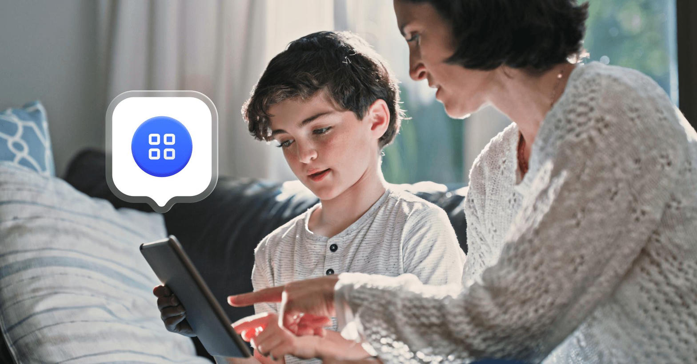
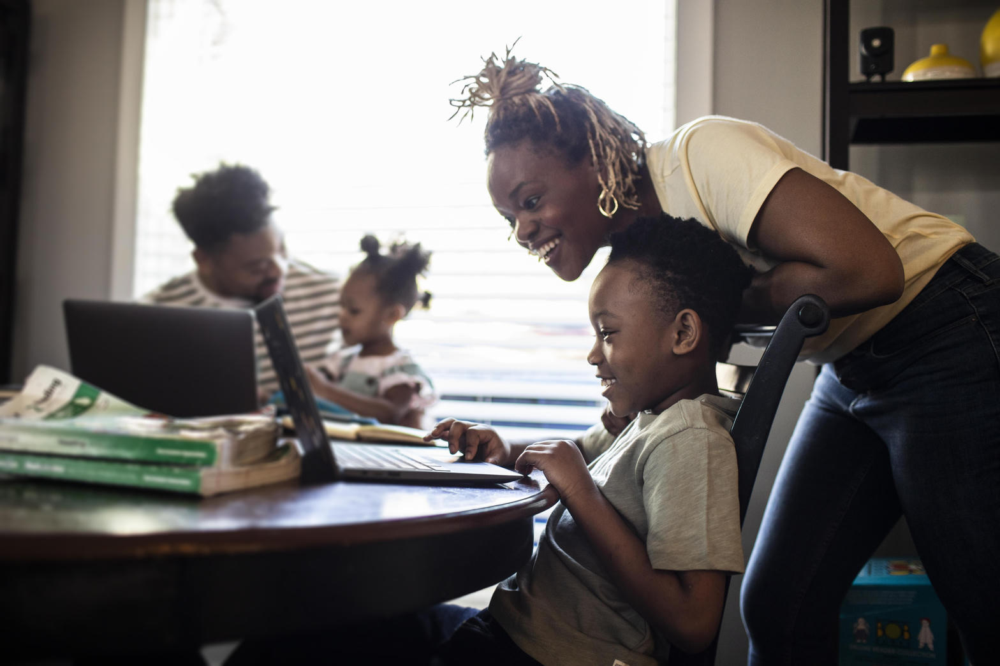
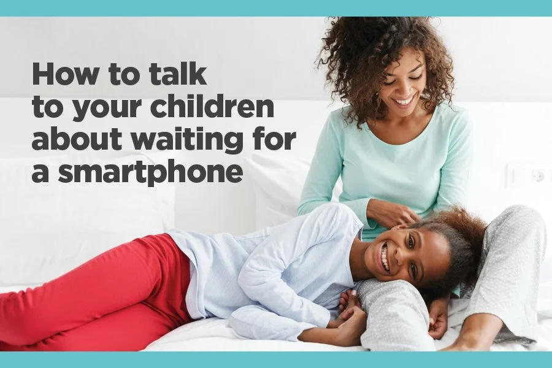
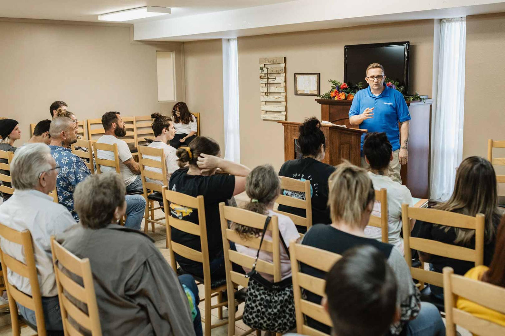

What gets covered
Guardians is a half-day of awareness, education, and practical training hosted by Cornerstone Fresno. The stated goal is simple and direct: equip everyday people to protect children, grandchildren, and the wider community.
Participants leave with tools to recognize warning signs of grooming and exploitation, know how to respond appropriately, and take on the role of a Guardian in their own circles. Lunch and training materials are included.
No compromise
Groomers are persuasive. The training focuses on the patterns of behavior that should trigger a defensive response. The practical rule for children is clear and non-negotiable:
Log off. Talk to an adult about what just happened.
That single habit — taught early and reinforced — is one of the strongest defenses available to families.
Parents and kids together



Featured voices
- • Jim Franklin — Lead pastor, Cornerstone Fresno
- • Tami Brown Rodriquez — Policy director focused on trafficking awareness and family advocacy
- • Ida Curtis
- • Debra Rush — Co-founder & CEO of Breaking the Chains; survivor and long-time Central Valley anti-trafficking leader
Why this matters here
Fresno and the Tower District live with real pressure around child safety, grooming, and exploitation. A community that learns the patterns, refuses compromise, and trains its children to log off and talk to a trusted adult becomes harder to prey upon. Guardians is one practical step available to any parent or neighbor willing to show up.

Show up
Saturday, August 29 • 9AM–2PM
Cornerstone Conference Center • 1525 Fulton St
$25 includes lunch and materials
Details and registration: cornerstonefresno.com/guardians
Sources
- Cornerstone Fresno — Guardians event page
- Speaker backgrounds drawn from public records of Breaking the Chains and related advocacy work